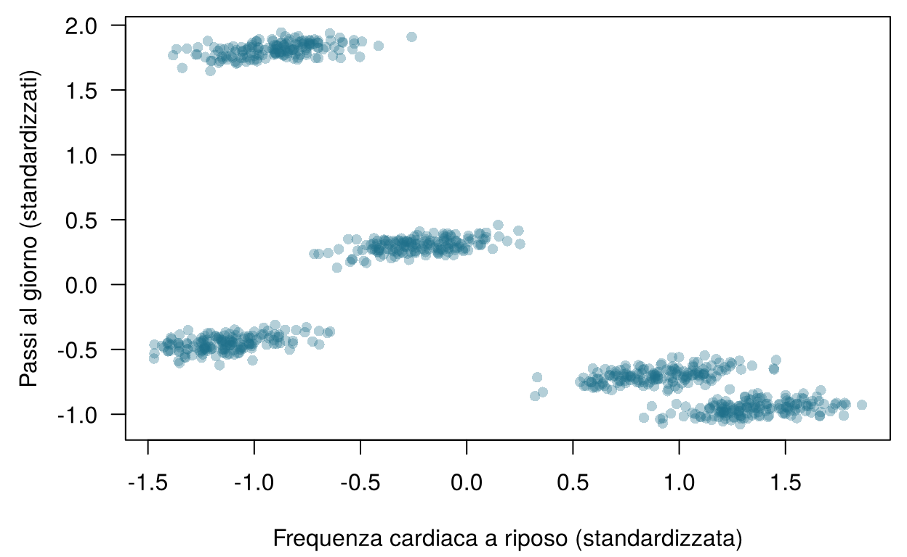
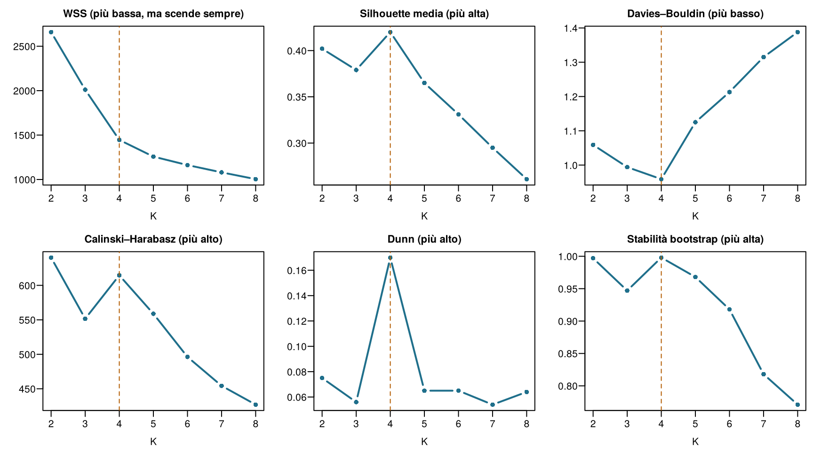
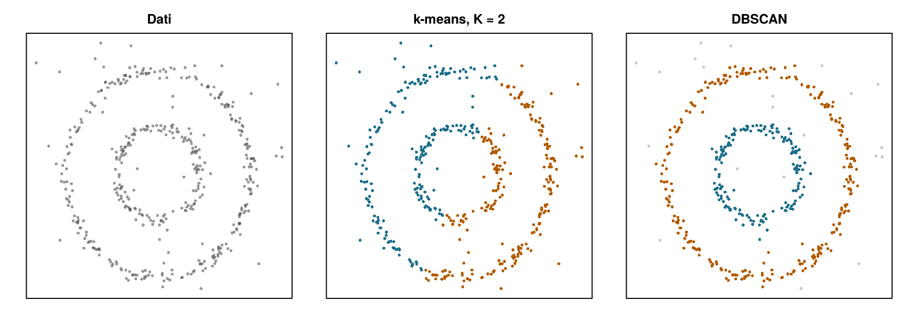
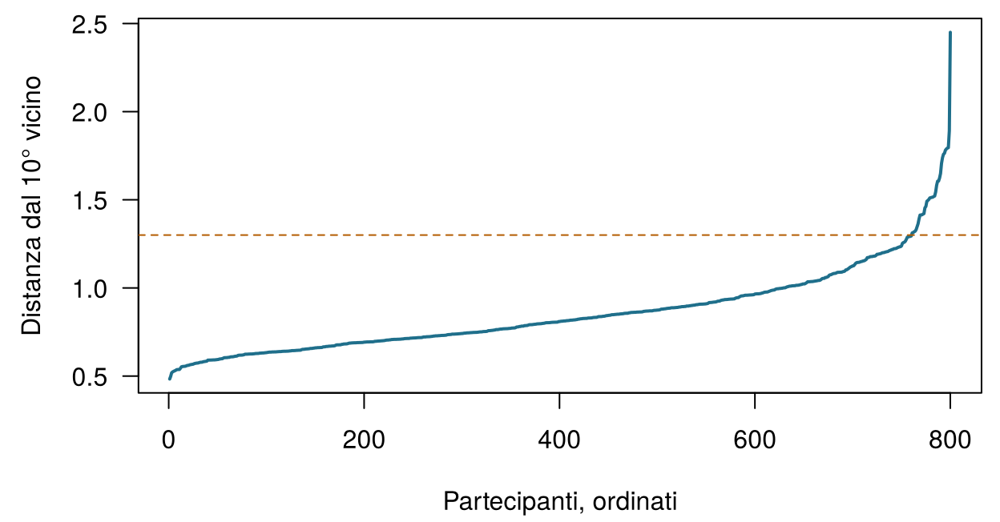
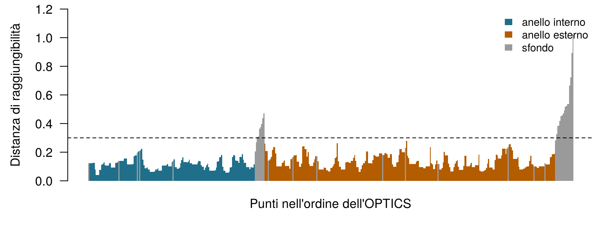
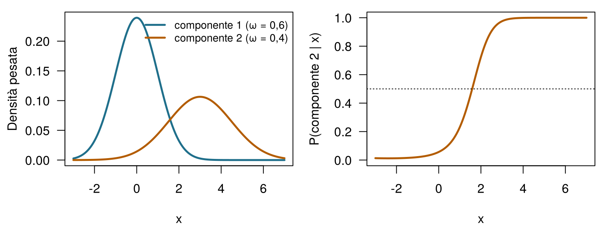

| ID | FC a riposo (bpm) | HRV, SDNN (ms) | Passi/giorno | Temp. cutanea (°C) | SpO2 (%) | Efficienza del sonno | Fenotipo vero |
|---|---|---|---|---|---|---|---|
| W001 | 62.76 | 80.89 | 11861 | 33.69 | 98.15 | 0.95 | healthy_active |
| W002 | 62.57 | 94.25 | 11992 | 32.25 | 98.14 | 0.92 | healthy_active |
| W003 | 58.01 | 77.88 | 11827 | 32.12 | 98.66 | 1.14 | healthy_active |
| W004 | 55.17 | 77.05 | 11715 | 31.82 | 97.76 | 0.94 | healthy_active |
| W005 | 61.49 | 72.71 | 11917 | 32.25 | 97.82 | 1.00 | healthy_active |
| W006 | 59.90 | 67.43 | 12037 | 31.94 | 98.11 | 0.99 | healthy_active |
11 Raggruppare i pazienti
Il clustering è non supervisionato: funziona senza esiti noti. Per ciascuna domanda qui sotto, decidi se servono etichette (un esito registrato per i casi passati, come nell’apprendimento supervisionato) o se la si può affrontare con il clustering (nessun esito). Prova a indovinare: il capitolo spiega la differenza nella pratica.
| Domanda | La tua risposta |
|---|---|
| Prevedere se un partecipante di HomeBeat avrà un evento di peggioramento, imparando dai partecipanti passati i cui eventi sono stati registrati. | |
| Raggruppare 800 utilizzatori di smartwatch in base ai profili dei loro segnali giornalieri, senza alcuna diagnosi associata. | |
| Cercare sottotipi molecolari tra 60 tumori a partire dall'espressione di 300 geni. | |
| Stimare la variazione della creatinina di Aoife a partire da 1.250 pazienti di terapia intensiva del passato. | |
| Trovare famiglie di lotti CellWorks con condizioni di processo simili, senza guardare la potenza. |
Come usare questo capitolo
Inizi da qui?
Questo capitolo riprende alcune idee dai precedenti:
- Ogni riga di un dataset è un’istanza con variabili \(\mathbf{x}_i\) (Definizione 1.7). L’apprendimento non supervisionato cerca una struttura in dati privi di esito (Sezione 1.6.2).
- Un modello troppo flessibile va incontro a sovradattamento: adatta rumore che non si ripresenterà nei dati nuovi (Definizione 1.8). Le impostazioni scelte dall’analista anziché apprese, come il \(k\) dei \(k\) vicini più prossimi, sono iperparametri (Capitolo 3).
- La distribuzione normale descrive misure che si disperdono simmetricamente attorno a una media, e la verosimiglianza misura quanto bene un modello con certi parametri spiega i dati (Capitolo 2).
- La distanza \(d(\mathbf{x}_i, \mathbf{x}_{i'})\) tra due pazienti è di solito quella euclidea; le variabili vengono standardizzate (centrate e divise per la deviazione standard) perché ciascuna conti allo stesso modo; la PCA riassume molte variabili correlate con pochi assi nuovi, le componenti principali, che conservano quanta più variabilità possibile (Capitolo 10).
- I dati reali hanno valori mancanti, e il modo in cui sono andati persi conta (Capitolo 9).
| Esempio | Chi o che cosa | Esito | Volti che incontrerai |
|---|---|---|---|
| 1 Terapia intensiva del Reparto 7 | 1.250 pazienti di terapia intensiva in 4 ospedali | variazione della creatinina in 48 h (danno renale acuto se ≥ 0,3 mg/dL) | Aoife (71 anni, sepsi, rischio borderline), Tomás (54 anni, rischio basso), Priya (38 anni, rischio alto); la dott.ssa Emma Walsh; Seán, il farmacista |
| 2 Studio ONCO-1 | 1.000 pazienti randomizzati a ricevere o meno la chemioterapia | riduzione del tumore (%) | i pazienti #0042 e #0917 |
| 3 HomeBeat | 500 persone che indossano uno smartwatch a casa | punteggio di stress, evento di peggioramento | Lena |
| 4 CellWorks | 420 lotti di produzione di una terapia cellulare | punteggio di potenza | il lotto CW-118 |
Tutti e quattro i dataset sono simulati e si possono scaricare dall’appendice sui dati. La presentazione completa si trova in Sezione 1.1.
Oltre a HomeBeat, questo capitolo usa due dataset didattici descritti nelle sue sezioni: una coorte pilota di 800 utilizzatori di smartwatch e una matrice di 300 valori di espressione genica per 60 pazienti. Entrambi sono simulati.
Questo capitolo parla di come trovare gruppi quando nessuno ti ha detto quali siano. Comprende dieci sezioni e un Laboratorio, otto verifiche rapide, tre widget “Prova tu”, una sfida e tre missioni di programmazione in R e Python. Calcola circa due ore. Tutto ciò che c’è nei widget gira nel tuo browser; le analisi più lente sono state eseguite una volta e i loro risultati vengono caricati da file.
La notazione in sintesi (solo per consultazione)
| Simbolo | Significato | Sezione |
|---|---|---|
| \(K\) | numero di cluster | Sezione 11.1 |
| \(C_k\), \(n_k\) | il cluster \(k\) e il numero di istanze che contiene | Sezione 11.1 |
| \(\mathbf{\mu}_k\) | centroide (vettore delle medie) del cluster \(k\) | Sezione 11.1 |
| \(g_i\) | etichetta di cluster dell’istanza \(i\), un numero da 1 a \(K\) | Sezione 11.3 |
| WSS, BSS | somme dei quadrati entro i cluster e tra i cluster | Sezione 11.3 |
| \(s(i)\) | silhouette dell’istanza \(i\) | Sezione 11.4 |
| ARI | indice di Rand aggiustato | Sezione 11.5 |
| \(r\), minPts | raggio dell’intorno in DBSCAN (eps nei software) e numero minimo di vicini |
Sezione 11.6 |
| \(\omega_k\), \(\mathbf{\Sigma}_k\) | proporzione di mistura e matrice di covarianza della componente \(k\) | Sezione 11.7 |
L’elenco completo si trova nella pagina della notazione. \(K\) si usa solo per i cluster; il numero di fold della validazione incrociata è \(V\).
11.1 Che cos’è un cluster?
Definizione 11.1 (Cluster e clustering) Un cluster è un gruppo di istanze più simili tra loro che alle istanze di altri gruppi, secondo una misura di somiglianza dichiarata. Il clustering è il compito di trovare tali gruppi in dati privi di etichette di esito. Una partizione assegna ogni istanza a esattamente uno di \(K\) cluster \(C_1, \dots, C_K\), con \(n_k\) istanze in \(C_k\).
Nota l’espressione secondo una misura dichiarata. Non esiste un’unica definizione, indipendente dal metodo, di cluster “vero”: un gruppo evidente secondo una nozione di somiglianza può svanire secondo un’altra (Hennig 2015). Ogni metodo di clustering di questo capitolo fa la sua scelta (gruppi tondeggianti attorno a un centro, regioni dense separate da regioni rade, curve a campana che si sovrappongono, un albero di fusioni annidate) e trova gruppi di quel tipo.
I metodi di clustering nascono da due grandi prospettive. I metodi piatti (di partizionamento) cercano una sola partizione in un numero prefissato di gruppi \(K\); il \(k\)-means, il \(k\)-medoidi e le misture gaussiane sono di questo tipo. I metodi gerarchici non si impegnano su un solo \(K\): costruiscono un albero di gruppi annidati, da ogni paziente da solo fino a tutti insieme, che si può tagliare a qualsiasi livello. Cominciamo con i metodi piatti e finiamo con gli alberi.
Molti metodi piatti riassumono un cluster con un punto rappresentativo.
Definizione 11.2 (Centroide e medoide) Il centroide del cluster \(C_k\) è la media dei suoi membri, \(\mathbf{\mu}_k = \frac{1}{n_k}\sum_{i \in C_k} \mathbf{x}_i\): la media coordinata per coordinata, un punto sintetico che non deve necessariamente coincidere con un paziente reale. Il medoide è il membro del cluster con la minima distanza media da tutti gli altri membri: sempre un paziente reale.
Il centroide sta al medoide come la media sta alla mediana. Una sola lettura difettosa di un sensore, con 40.000 passi, trascina il centroide verso di sé; un medoide, ancorato a una persona reale, si sposta appena. Questa robustezza spiega perché il \(k\)-medoidi (Kaufman e Rousseeuw 1990) sia apprezzato con i dati clinici disordinati, a fronte di un costo computazionale maggiore.
Esegui un algoritmo di clustering sul pilota di HomeBeat e chiedi quattro cluster. Ne restituisce quattro. Che cosa hai imparato?
11.2 La coorte pilota e i suoi sei segnali
Il dataset del pilota ha una riga per partecipante, che riassume diverse settimane di dati dell’orologio.
I dati sono stati simulati con cinque fenotipi digitali di 160 persone ciascuno: sano e attivo (frequenza cardiaca bassa, molti passi), stress elevato (frequenza cardiaca alta, bassa variabilità della frequenza cardiaca, pochi passi), sedentario tranquillo (frequenza cardiaca bassa, pochi passi), febbre o infezione (cute calda, saturazione di ossigeno più bassa) e post-operatorio (la frequenza cardiaca più alta e quasi nessun passo). Nel monitoraggio a distanza reale nessuno conosce i fenotipi, e forse non ce ne sono affatto. Qui li conosciamo, e questo ci permette una cosa raramente possibile nella pratica: verificare che cosa ogni metodo azzecca e che cosa sbaglia. L’efficienza del sonno è la quota del tempo trascorso a letto passata dormendo; la simulazione lascia che alcuni valori superino 1 (124 su 800), un promemoria del fatto che i dati simulati sono uno strumento didattico, non uno specchio della realtà.
11.2.1 Preparare i dati: una sola scala per tutti
Il clustering è guidato dalle distanze tra i pazienti (Capitolo 10). I passi arrivano alle migliaia, la temperatura cutanea varia di un paio di gradi e l’efficienza del sonno sta tra 0 e 1. Sulle scale originali, la distanza euclidea tra due partecipanti è quasi interamente una differenza di passi, e gli altri cinque segnali vengono ignorati. Il rimedio abituale è standardizzare ogni variabile a media 0 e deviazione standard 1 prima del clustering (Kaufman e Rousseeuw 1990, cap. 1). Tieni presente che si tratta di una scelta di modellazione, non di un passaggio neutro: decide quanto può contare ciascun segnale (Hastie, Tibshirani, e Friedman 2009, cap. 14). Vedremo che tornerà a morderci.

Esegui il \(k\)-means sui dati del pilota senza standardizzare. Quale segnale dominerà i cluster?

La Figura 11.2 mostra il flusso di lavoro che seguiamo. A differenza dell’apprendimento supervisionato, non c’è un esito da prevedere né un errore di test da riportare, quindi l’ultimo riquadro, validare, porta la maggior parte del peso.
11.3 \(k\)-means
Il metodo di clustering più antico e più diffuso poggia su un’intuizione: se esistono dei gruppi, dovrebbero esserci dei centri attorno a cui i pazienti si radunano. Il \(k\)-means cerca \(K\) centroidi, e un’assegnazione di ogni paziente a uno di essi, che rendano i cluster il più compatti possibile. La compattezza si misura con la somma dei quadrati entro i cluster (within-cluster sum of squares),
\[ \text{WSS} = \sum_{k=1}^{K} \sum_{i \in C_k} \lVert \mathbf{x}_i - \mathbf{\mu}_k \rVert^2 , \qquad(11.1)\]
la distanza quadratica totale di ciascun paziente dal centroide del proprio cluster. Il nome risale a MacQueen (1967); l’algoritmo classico per minimizzare la WSS si deve a Lloyd (1982), che lo descrisse nel 1957 per l’elaborazione dei segnali.
Definizione 11.3 (\(k\)-means (algoritmo di Lloyd)) Scegli \(K\) e colloca \(K\) centroidi iniziali (per esempio su \(K\) pazienti scelti a caso). Poi ripeti due passi finché nessun paziente cambia cluster:
- Assegnare: dai a ogni paziente l’etichetta \(g_i\) del centroide più vicino.
- Aggiornare: sposta ogni centroide nella media dei pazienti che ora gli sono assegnati.
Nessuno dei due passi può aumentare la WSS, quindi l’algoritmo si ferma sempre, ma in un minimo locale che dipende dai centroidi di partenza.
Geometricamente, i centroidi suddividono lo spazio delle variabili in celle di Voronoi: ogni cella è la regione più vicina al proprio centroide che a qualsiasi altro. Il passo di assegnazione fa cadere ogni paziente nella sua cella; il passo di aggiornamento sposta i centroidi, e le pareti delle celle si spostano con loro. La convergenza è il momento in cui le pareti smettono di muoversi. Prova tu.
Esegui il \(k\)-means passo per passo. I punti sono gli 800 partecipanti del pilota, mostrati su due dei sei segnali (frequenza cardiaca standardizzata e passi); qui il \(k\)-means usa solo questi due. Premi Passo successivo per alternare assegnare e aggiornare, osserva la WSS scendere a ogni passo e arriva fino alla convergenza. Poi premi Nuova partenza casuale, o cambia \(K\), e confronta. Attiva Colora per fenotipo vero per vedere ciò che all’algoritmo non è mai stato detto. Obiettivo: porta una partenza fino alla convergenza.
Vale la pena notare quattro cose. I primi passi spostano molto i centroidi, gli ultimi quasi per nulla. La WSS non sale mai. Partenze casuali diverse possono portare a soluzioni diverse, con WSS diverse: una partenza sfortunata può lasciare due centroidi a dividersi un unico addensamento mentre un altro centroide resta a cavallo di due. E con \(K = 5\) e una buona partenza, la versione a due segnali separa la fascia ad alta frequenza cardiaca nei due fenotipi che i colori veri rivelano (un ARI intorno a 0,9). Tieni a mente quest’ultima osservazione: con tutti e sei i segnali non succederà.
La difesa standard contro le partenze sfortunate è eseguire l’algoritmo da molte partenze e tenere la soluzione con la WSS più bassa (nstart = 20 in R, n_init in scikit-learn). Un’inizializzazione più furba, il \(k\)-means++, distanzia i centroidi iniziali scegliendo ciascuno di essi con probabilità proporzionale alla sua distanza al quadrato da quelli già scelti (Arthur e Vassilvitskii 2007). scikit-learn la usa come impostazione predefinita; la funzione kmeans() di R no: parte da righe scelte a caso.
Tre algoritmi, un obiettivo: Lloyd, MacQueen e Hartigan–Wong
Tutti e tre minimizzano la stessa WSS; differiscono nel modo in cui spostano i centroidi (Rhys 2020, cap. 16).
| Algoritmo | Come aggiorna | Note | Nella kmeans() di R |
|---|---|---|---|
| Lloyd (batch) | assegna tutti, poi ricalcola tutti i centroidi | semplice; è quello del widget | algorithm = "Lloyd" |
| MacQueen (online) | dopo il primo passaggio, visita i pazienti uno alla volta e sposta subito i due centroidi coinvolti ogni volta che un paziente cambia cluster | adatto a dati che arrivano in flusso; dipende dall’ordine delle righe | algorithm = "MacQueen" |
| Hartigan–Wong | sposta un paziente in un altro cluster ogni volta che ciò riduce la WSS totale, anche se il nuovo centroide non è il più vicino (Hartigan e Wong 1979) | di solito raggiunge la WSS più bassa; è il predefinito di R | algorithm = "Hartigan-Wong" |
Sui dati del pilota i tre danno partizioni praticamente identiche, quindi la scelta dell’algoritmo conta molto meno della scelta di \(K\) e delle variabili.
La variabilità totale dei dati standardizzati si scompone in due parti, esattamente come in un’analisi della varianza:
\[ \underbrace{\sum_{i=1}^{n} \lVert \mathbf{x}_i - \bar{\mathbf{x}} \rVert^2}_{\text{totale}} = \underbrace{\sum_{k=1}^{K}\sum_{i \in C_k} \lVert \mathbf{x}_i - \mathbf{\mu}_k \rVert^2}_{\text{WSS}} + \underbrace{\sum_{k=1}^{K} n_k \lVert \mathbf{\mu}_k - \bar{\mathbf{x}} \rVert^2}_{\text{BSS}} , \qquad(11.2)\]
dove \(\bar{\mathbf{x}}\) è la media complessiva e BSS è la somma dei quadrati tra i cluster (between-cluster sum of squares). Poiché il totale è fisso, rendere i cluster compatti (WSS piccola) equivale ad allontanarne i centroidi (BSS grande).
Sui sei segnali standardizzati, la WSS è 2659,8 con \(K = 2\) e 1004,1 con \(K = 8\). Dovresti scegliere il \(K\) con la WSS più piccola?
11.4 Quanti cluster? Indici interni e stabilità
\(K\) è un iperparametro, e sceglierlo è la decisione di modellazione centrale del \(k\)-means. Troppo pochi cluster portano al sottoadattamento: stati distinti vengono accorpati. Troppi portano al sovradattamento: un gruppo genuino viene sminuzzato in frammenti che non ricomparirebbero in dati nuovi. Senza etichette, ci appoggiamo a due tipi di evidenza.
Definizione 11.4 (Indice di validazione interna) Un indice interno assegna un punteggio a una partizione usando soltanto i dati e le etichette dei cluster, bilanciando quanto i cluster sono compatti con quanto sono separati. Confrontare l’indice tra diversi valori di \(K\) suggerisce quale \(K\) si adatta meglio ai dati, secondo la nozione di buon cluster propria dell’indice.
Quattro indici sono di uso comune.
- Silhouette (Rousseeuw 1987). Per il paziente \(i\), sia \(\bar d_{\text{proprio}}(i)\) la distanza media dagli altri membri del suo cluster e \(\bar d_{\text{vicino}}(i)\) la distanza media dai membri del cluster diverso più vicino. Allora \[ s(i) = \frac{\bar d_{\text{vicino}}(i) - \bar d_{\text{proprio}}(i)}{\max\{\bar d_{\text{proprio}}(i),\ \bar d_{\text{vicino}}(i)\}} , \qquad(11.3)\] che è compreso tra −1 e 1: vicino a 1 quando \(i\) sta comodamente nel suo cluster, vicino a 0 quando è su un confine, negativo quando starebbe meglio nel cluster accanto. La silhouette media riassume una partizione; più è alta, meglio è.
- Davies–Bouldin (Davies e Bouldin 1979). Per ogni cluster, prendi il rapporto peggiore tra (la sua dispersione + la dispersione di un vicino) e la distanza tra i loro centroidi, poi fai la media sui cluster. Più è basso, meglio è.
- Calinski–Harabasz (pseudo-F) (Caliński e Harabasz 1974): \(\text{CH} = \dfrac{\text{BSS}/(K-1)}{\text{WSS}/(n-K)}\), il rapporto in stile ANOVA della
- Più è alto, meglio è.
- Dunn (Dunn 1973): la distanza minima tra due pazienti di cluster diversi divisa per la distanza massima tra due pazienti dello stesso cluster. Guarda al caso peggiore, quindi un solo valore anomalo può affossarlo. Più è alto, meglio è.
Un secondo tipo di evidenza è la stabilità (Hennig 2007): una struttura a cluster reale dovrebbe ricomparire quando i dati vengono perturbati. Estraiamo campioni bootstrap degli 800 partecipanti, rieseguiamo il \(k\)-means su ciascuno, assegniamo tutti al centroide bootstrap più vicino e misuriamo l’accordo con la partizione originale (con l’indice di Rand aggiustato, introdotto nella prossima sezione; 1 = identiche). Si può anche prendere in prestito la logica della validazione incrociata: adattare i cluster su alcuni fold e calcolare gli indici sui partecipanti lasciati fuori, così che \(K\) venga giudicato su persone che il clustering non ha mai visto (Rhys 2020, cap. 16).

Il verdetto sembra unanime (Figura 11.3). La silhouette ha il picco a \(K = 4\), Davies–Bouldin è minimo a \(K = 4\), Dunn ha il picco a \(K = 4\), e la soluzione a quattro cluster è la più stabile (0,998). Solo Calinski–Harabasz dissente, preferendo \(K = 2\), con quattro secondo a breve distanza. Un’analista scrupolosa riporterebbe quattro fenotipi digitali, e avrebbe buone ragioni per sentirsi sicura.
E sbaglierebbe: i dati sono stati generati con cinque.
11.5 Quattro o cinque? L’indice di Rand aggiustato
Quando esistono etichette vere (in una simulazione, o quando i cluster vengono confrontati con una classificazione consolidata), possiamo misurare quanto bene una partizione le recupera. I numeri dei cluster sono arbitrari (il cluster 2 di un’esecuzione può essere il cluster 4 della successiva), quindi non si possono semplicemente contare le etichette che coincidono. Guardiamo invece le coppie di pazienti: una buona partizione mette insieme le coppie che devono stare insieme e separa quelle che non devono.
Definizione 11.5 (Indice di Rand aggiustato (ARI)) Considera tutte le \(\binom{n}{2}\) coppie di istanze. L’indice di Rand è la proporzione di coppie su cui due partizioni concordano (entrambe mettono insieme la coppia, oppure entrambe la tengono separata). L’indice di Rand aggiustato (adjusted Rand index) lo corregge per l’accordo atteso per caso (Hubert e Arabie 1985): \[ \text{ARI} = \frac{\text{indice di Rand} - \text{indice di Rand atteso}}{\text{indice di Rand massimo} - \text{indice di Rand atteso}} . \] ARI = 1 per partizioni identiche (qualunque siano i nomi delle etichette), circa 0 per una partizione non migliore del caso, e può essere leggermente negativo.
Ecco la soluzione a quattro cluster messa a confronto con la verità.
| cluster | sano e attivo | stress elevato | post-operatorio | sedentario tranquillo | febbre/infezione |
|---|---|---|---|---|---|
| 1 | 160 | 0 | 0 | 0 | 0 |
| 2 | 0 | 158 | 160 | 0 | 0 |
| 3 | 0 | 2 | 0 | 160 | 0 |
| 4 | 0 | 0 | 0 | 0 | 160 |
Tre fenotipi emergono nettamente. I partecipanti con stress elevato e quelli post-operatori, entrambi con frequenza cardiaca alta e pochi passi, finiscono in un unico grande cluster. L’ARI è 0,779. Dire al \(k\)-means il numero giusto risolverà sicuramente il problema?
| cluster | sano e attivo | stress elevato | post-operatorio | sedentario tranquillo | febbre/infezione |
|---|---|---|---|---|---|
| 1 | 160 | 0 | 0 | 0 | 0 |
| 2 | 0 | 110 | 87 | 0 | 0 |
| 3 | 0 | 0 | 0 | 159 | 0 |
| 4 | 0 | 0 | 0 | 0 | 159 |
| 5 | 0 | 50 | 73 | 1 | 1 |
No (Tabella 11.3). Con \(K = 5\) il gruppo fuso viene diviso, ma lungo la linea sbagliata: ciascuno dei due cluster risultanti è un miscuglio di entrambi i fenotipi, e l’ARI scende a 0,750. Non è sfortuna con le partenze: la partizione nei cinque fenotipi veri ha una WSS di 1381,3, più alta dei 1257,8 della soluzione del \(k\)-means. Con il metro dello stesso \(k\)-means, la verità è una risposta peggiore.
Perché? Guarda quanto è disperso ciascun fenotipo lungo ogni segnale standardizzato (la deviazione standard media all’interno di ciascun fenotipo; l’intera coorte ha 1 su ogni segnale):
| Segnale | DS entro il fenotipo | |
|---|---|---|
| HR_mean | FC a riposo | 0.199 |
| HRV_sdnn | HRV | 0.448 |
| steps_mean | Passi | 0.056 |
| skin_temp | Temperatura cutanea | 0.633 |
| spo2 | SpO2 | 0.552 |
| sleep_eff | Efficienza del sonno | 0.884 |
I fenotipi sono “frittelle” schiacciate: sottilissimi nei passi (0,056) e larghi nell’efficienza del sonno (0,884). I gruppi con stress elevato e post-operatorio differiscono soprattutto nei passi: circa 1.000 al giorno, un divario enorme rispetto alla loro dispersione, ma piccolo dopo la standardizzazione con la dispersione dell’intera coorte. Il \(k\)-means presuppone cluster tondi di dimensioni simili e taglia dove le nuvole sono più larghe, non dove si trova il vero divario. Nel widget, con la sola frequenza cardiaca e i passi, il divario era visibile e il \(k\)-means lo trovava; i quattro segnali in più, larghi all’interno di ogni fenotipo e privi di informazione su questi due gruppi, aggiungono dispersione in altre direzioni che lo sommerge. Scegliere quali variabili entrano nella distanza è una decisione di modellazione tanto quanto scegliere \(K\). Gli indici interni condividono la geometria del \(k\)-means, quindi si sono trovati d’accordo tra loro, e con il suo errore.
La lezione
Gli indici interni e la stabilità misurano quanto bene i dati si adattano all’idea di cluster propria del metodo. Non possono dirti se i cluster sono reali. Quattro indici concordi e una soluzione stabile hanno prodotto una risposta sicura, riproducibile e sbagliata. Ne seguono due rimedi, e il resto del capitolo li usa entrambi: provare metodi con nozioni diverse di cluster e, soprattutto, validare i cluster con conoscenze che l’algoritmo non ha visto.
Una collega raggruppa 100 pazienti in tre gruppi etichettati 1, 2, 3. I sottotipi veri sono A, B, C, e ogni paziente A è nel cluster 3, ogni B nel cluster 1 e ogni C nel cluster 2. Quanto vale l’ARI?
Dai al \(k\)-means il numero vero. I dati del pilota sono caricati come wear, con i nomi dei sei segnali in vars, e c’è una funzione ari() che calcola l’indice di Rand aggiustato. Standardizza i segnali, esegui il \(k\)-means con il numero vero di fenotipi e misura l’accordo con i fenotipi veri.
I dati sono stati simulati con cinque fenotipi di 160 persone ciascuno.
km <- kmeans(X, centers = 5, nstart = 20)I dati sono stati simulati con cinque fenotipi di 160 persone ciascuno.
km = KMeans(n_clusters=5, n_init=20, random_state=2025).fit(X)Nei dati reali non c’è una colonna phenotype_true. Che cosa ci avrebbe messo in guardia? Guardare ogni segnale sulla sua scala (un istogramma dei passi tra i partecipanti con frequenza cardiaca alta mostra due gobbe separate); chiedere ai clinici se “frequenza cardiaca alta, nessun passo” mette insieme persone che andrebbero gestite in modo diverso; e adattare un metodo i cui cluster possano essere allungati, cosa che facciamo nella Sezione 11.7.
11.5.1 Punti di forza e limiti del \(k\)-means
Il \(k\)-means è veloce, scala a milioni di righe, è facile da spiegare, e i suoi centroidi sono riassunti leggibili: un centroide a +1,8 deviazioni standard nei passi e −0,9 nella frequenza cardiaca è il profilo sano e attivo. I suoi limiti derivano dal suo obiettivo. Richiede \(K\) in anticipo; funziona solo con variabili numeriche (categorie come il tipo di dispositivo o la diagnosi richiedono altri metodi, come il \(k\)-medoidi con una dissimilarità adatta); dipende dalla scala; il suo risultato dipende dalle partenze; pochi valori anomali allontanano i centroidi; e predilige cluster tondi di dimensioni simili. Inoltre assegna ogni paziente a qualche cluster, per quanto insolito sia il paziente.
11.6 Clustering basato sulla densità: DBSCAN e OPTICS
I metodi basati sulla densità adottano un altro punto di vista: un cluster è una regione in cui i pazienti sono affollati, separata da altre regioni simili da spazio rado. I cluster possono allora avere qualsiasi forma, e un paziente che si trova in una regione vuota non deve per forza appartenere a un cluster. Nel monitoraggio a distanza è spesso proprio ciò che vogliamo: un episodio insolito o un sensore difettoso va segnalato, non forzato nel gruppo più vicino.
Definizione 11.6 (DBSCAN) Il DBSCAN (density-based spatial clustering of applications with noise, clustering spaziale basato sulla densità di applicazioni con rumore) (Ester et al. 1996) usa due iperparametri, un raggio \(r\) (chiamato eps nei software) e un conteggio minPts. Un punto centrale (core point) ha almeno minPts punti, sé stesso compreso, entro la distanza \(r\). Un punto di bordo ne ha di meno, ma si trova entro \(r\) da un punto centrale. Ogni altro punto è rumore. Un cluster cresce a partire da un punto centrale aggiungendo tutto ciò che si trova entro \(r\) da esso, poi tutto ciò che si trova entro \(r\) da ogni nuovo punto centrale, e così via, finché non si può raggiungere nient’altro.
La dimostrazione classica usa forme che mettono in crisi il \(k\)-means. Qui sotto, 150 punti formano un anello interno, 260 un anello esterno, e 40 sono sparsi a caso.

Il \(k\)-means taglia il piano in due metà, ciascuna con pezzi di entrambi gli anelli (ARI sui punti degli anelli 0,008, non migliore del caso). Il DBSCAN segue gli anelli, perché i punti vicini lungo un anello continuano a passarsi il cluster, e lascia 21 dei punti sparsi come rumore. Ora trova tu delle buone impostazioni.
Regola il DBSCAN a mano. Sposta il raggio \(r\) e minPts. Le croci grigie sono rumore; i cerchi vuoti sono punti di bordo. Guarda che cosa succede quando \(r\) è troppo piccolo (gli anelli si frantumano in frammenti e molto diventa rumore) e troppo grande (gli anelli si fondono tra loro e con lo sfondo). Obiettivo: esattamente due cluster che recuperino i due anelli (ARI sui punti degli anelli ≥ 0,95).
11.6.1 Scegliere \(r\) e minPts
Due abitudini aiutano. Primo, standardizza le variabili, così che uno stesso raggio significhi la stessa cosa in ogni direzione. Secondo, fissa minPts (sono comuni valori tra 5 e 15; più grandi per dati più numerosi o con più dimensioni) e traccia un grafico delle distanze dal \(k\)-esimo vicino più prossimo: per ogni paziente, la distanza dal suo minPts-esimo vicino più prossimo, ordinata dalla più piccola alla più grande. I pazienti nelle regioni dense hanno valori piccoli, quelli nelle regioni rade valori grandi, e il “gomito” in cui la curva piega verso l’alto suggerisce un raggio (Ester et al. 1996; Hahsler, Piekenbrock, e Doran 2019). In molte dimensioni tutte le distanze diventano simili (Capitolo 10), la densità è difficile da stimare e il DBSCAN diventa fragile.

Calcola tu le distanze dal \(k\)-esimo vicino più prossimo. X contiene i sei segnali standardizzati e d la matrice delle distanze tra tutte le coppie di partecipanti. Per ogni partecipante, estrai la distanza dal suo 10° vicino più prossimo, poi riporta il 95° percentile di queste distanze. Attenzione: ogni partecipante si trova a distanza 0 da sé stesso.
sort(row)[1] vale sempre 0: la distanza del partecipante da sé stesso.
knn10 <- apply(d, 1, function(row) sort(row)[11])La colonna 0 di ogni riga ordinata vale 0 (il partecipante stesso), e Python conta da 0.
knn10 = np.sort(d, axis=1)[:, 10]Come se la cava il DBSCAN sulla coorte pilota? La Tabella 11.5 lo esegue sui sei segnali standardizzati con minPts = 10 e diversi raggi.
| Raggio r | Cluster | Punti di rumore | ARI con la verità |
|---|---|---|---|
| 0.6 | 8 | 527 | 0.060 |
| 0.8 | 4 | 152 | 0.562 |
| 1.0 | 4 | 32 | 0.739 |
| 1.1 | 4 | 16 | 0.761 |
| 1.2 | 4 | 11 | 0.769 |
| 1.3 | 4 | 3 | 0.778 |
| 1.4 | 2 | 3 | 0.209 |
| 1.5 | 2 | 2 | 0.209 |
| 1.6 | 2 | 0 | 0.210 |
I raggi piccoli lasciano centinaia di partecipanti come rumore. Intorno al gomito (\(r\) da 1,1 a 1,3) il DBSCAN trova quattro cluster, con una manciata di punti di rumore e un ARI di circa 0,78; un raggio più grande fonde altri gruppi. Qui il DBSCAN ha lo stesso punto cieco del \(k\)-means, per un motivo diverso: i partecipanti con stress elevato e quelli post-operatori sono collegati da una catena ininterrotta di intorni densi, quindi la densità non riesce a separarli. I pochi punti di rumore, però, sono un vero vantaggio: sono i partecipanti che meritano una seconda occhiata.
11.6.2 OPTICS: la densità su più scale
Il DBSCAN usa un unico raggio ovunque, ma i cluster reali spesso differiscono in densità: un gruppo post-operatorio compatto accanto a un gruppo sedentario diffuso. L’OPTICS (ordering points to identify the clustering structure, ordinare i punti per identificare la struttura dei cluster) (Ankerst et al. 1999) evita di impegnarsi su un solo raggio. Visita i punti in un ordine che tiene insieme gli intorni densi e registra, per ogni punto, una distanza di raggiungibilità (reachability distance): all’incirca, quanto dovrebbe essere grande \(r\) perché quel punto venga raggiunto dai punti visitati prima di lui. Riportati in ordine di visita, i cluster densi appaiono come valli e le regioni rade come picchi (Figura 11.7). Tagliare il grafico con una linea orizzontale all’altezza \(r\) restituisce il clustering del DBSCAN con quel raggio; un solo ordinamento serve per tutti i raggi contemporaneamente.

Sulla coorte pilota, l’OPTICS con minPts = 10, tagliato a \(r = 1{,}3\), dà di nuovo 4 cluster e 3 punti di rumore: nessuna sorpresa, perché il taglio riproduce il DBSCAN con quel raggio. Il suo valore sta nel grafico stesso, che mostra a colpo d’occhio se i dati hanno un’unica scala naturale di densità o più d’una.
Il DBSCAN etichetta come rumore 16 degli 800 partecipanti del pilota. Che cosa dovrebbero farne le infermiere?
11.7 Misture gaussiane: cluster sfumati
Finora ogni paziente è appartenuto a esattamente un cluster, senza sfumature: è il clustering rigido (hard clustering). La fisiologia è raramente così ordinata. Un partecipante può trovarsi tra “stress elevato” e “post-operatorio”, e sarebbe più onesto dire 70 % l’uno, 30 % l’altro. I modelli di mistura lo rendono possibile trattando i dati come generati da diverse distribuzioni di probabilità sovrapposte, una per cluster.
Definizione 11.7 (Modello di mistura gaussiana (GMM)) Un modello di mistura gaussiana assume che ogni istanza provenga da una di \(K\) componenti, dove la componente \(k\) viene scelta con probabilità \(\omega_k\) (le proporzioni di mistura, che sommano a 1) e genera \(\mathbf{x}\) da una distribuzione normale multivariata con media \(\mathbf{\mu}_k\) e matrice di covarianza \(\mathbf{\Sigma}_k\): \[ p(\mathbf{x}) = \sum_{k=1}^{K} \omega_k \, \mathcal{N}(\mathbf{x} \mid \mathbf{\mu}_k, \mathbf{\Sigma}_k) . \qquad(11.4)\] La media è il centro della componente; la matrice di covarianza ne stabilisce la forma (tonda o allungata), l’orientamento e il volume.
Definizione 11.8 (Assegnazione sfumata) Per ogni istanza, un modello di mistura fornisce la probabilità a posteriori di appartenenza \(P(g_i = k \mid \mathbf{x}_i)\) per ogni componente \(k\), secondo il teorema di Bayes (Capitolo 2) con le \(\omega_k\) come probabilità a priori e le densità normali come verosimiglianze. Assegnare ogni istanza alla sua componente più probabile dà una partizione rigida; \(1 - \max_k P(g_i = k \mid \mathbf{x}_i)\) misura quanto è incerta quell’assegnazione.

I parametri vengono stimati per massima verosimiglianza con l’algoritmo EM (Dempster, Laird, e Rubin 1977), che somiglia in modo sorprendente al \(k\)-means:
- Passo E (expectation, valore atteso): con i parametri correnti, calcola le probabilità di appartenenza di ogni paziente: un passo di assegnazione sfumato.
- Passo M (massimizzazione): ristima \(\omega_k\), \(\mathbf{\mu}_k\) e \(\mathbf{\Sigma}_k\) di ogni componente, pesando ogni paziente con la sua probabilità di appartenenza: un passo di aggiornamento pesato.
I due passi si ripetono finché la verosimiglianza smette di crescere. Come il \(k\)-means, l’EM può fermarsi in un ottimo locale, quindi si usano diverse partenze. In effetti il \(k\)-means è un caso limite di GMM in cui tutte le componenti sono tonde con la stessa varianza, piccolissima, e le assegnazioni sono rigide (Hastie, Tibshirani, e Friedman 2009, sec. 14.3.7).
| \(k\)-means | Mistura gaussiana | |
|---|---|---|
| Assegnazione | rigida | sfumata (probabilità) |
| Forma del cluster | tonda, di dimensioni simili | ellittica; forma, dimensioni e orientamento possono variare |
| Obiettivo | minimizzare la WSS | massimizzare la verosimiglianza |
| Incertezza dell’assegnazione di un paziente | non disponibile | probabilità a posteriori |
| Scelta di \(K\) | indici interni, stabilità | gli stessi, o un criterio d’informazione come il BIC |
Quanto dovrebbero essere flessibili le matrici di covarianza? Il pacchetto R mclust (Scrucca et al. 2016) indica le opzioni con tre lettere, per volume, forma e orientamento: EII indica componenti sferiche di uguale dimensione (la geometria del \(k\)-means), VII sferiche di dimensione variabile, EEE ellissoidi che condividono tutti la stessa matrice di covarianza e VVV una matrice di covarianza libera per ogni componente. Ogni combinazione di modello e \(K\) riceve un punteggio dal criterio d’informazione bayesiano (BIC) (Schwarz 1978), che premia la verosimiglianza e penalizza il numero di parametri; nella convenzione di mclust, un BIC più alto è migliore.
| Componenti | EII (tonde, uguali) | VII (tonde, variabili) | EEE (ellissoide comune) | VVV (libera) |
|---|---|---|---|---|
| 2 | -11922.5 | -12204.6 | -10316.5 | -9075.8 |
| 3 | -11257.3 | -11032.9 | -9448.2 | -7752.6 |
| 4 | -10175.7 | -10176.5 | -6588.8 | -6343.2 |
| 5 | -9918.7 | -9933.9 | -5713.7 | -6470.8 |
| 6 | -9876.6 | -9861.5 | -5747.7 | -6666.3 |
| 7 | -9716.4 | -9703.5 | -5776.1 | -6799.0 |
| 8 | -9583.0 | -9586.1 | -5809.6 | -6934.1 |
Il BIC sceglie 5 componenti con una covarianza ellissoidale comune (EEE), che è, di fatto, esattamente il modo in cui i dati sono stati simulati: cinque gruppi, un’unica matrice di covarianza comune. La sua partizione recupera i cinque fenotipi con un ARI di 0,997 (Tabella 11.8). I modelli tondi (EII, VII), la geometria del \(k\)-means, ottengono punteggi molto peggiori per ogni \(K\). Il GMM ha successo perché riesce ad apprendere che i fenotipi sono sottili nei passi e larghi nell’efficienza del sonno, e quindi li separa lungo il divario reale.
| cluster | sano e attivo | stress elevato | post-operatorio | sedentario tranquillo | febbre/infezione |
|---|---|---|---|---|---|
| 1 | 160 | 0 | 0 | 0 | 0 |
| 2 | 0 | 160 | 1 | 0 | 0 |
| 3 | 0 | 0 | 159 | 0 | 0 |
| 4 | 0 | 0 | 0 | 160 | 0 |
| 5 | 0 | 0 | 0 | 0 | 160 |
Le probabilità di appartenenza sono quasi tutte vicine a 0 o a 1: solo 1 partecipante ha un’incertezza di assegnazione superiore a 0,1. Questo perché i fenotipi simulati, una volta modellata correttamente la loro forma, si sovrappongono appena. Incontreremo un dataset in cui l’appartenenza sfumata conta molto di più nella Sezione 11.9.
Le misture hanno i loro costi. Una matrice di covarianza libera per componente richiede molti parametri (21 per componente con sei variabili), quindi VVV va facilmente incontro a sovradattamento nei campioni piccoli; l’EM può convergere lentamente o verso ottimi locali scadenti; e i cluster sono buoni solo quanto l’ipotesi di normalità.
Per una partecipante, un GMM fornisce probabilità di appartenenza di 0,55 (stress elevato) e 0,45 (post-operatorio). Qual è la lettura migliore?
11.8 Clustering gerarchico dei profili di espressione genica
Il clustering gerarchico non chiede affatto \(K\). Costruisce un’intera famiglia di partizioni annidate e le mostra come un albero. Lo usiamo su un tipo di dati diverso, tipico della medicina molecolare: l’espressione di 300 geni in campioni tumorali di 60 pazienti. I dati sono stati simulati con tre programmi molecolari di 20 pazienti ciascuno: a predominanza interferonica (A_IFN), a predominanza infiammatoria (B_Inflam) e metabolico (C_Metab). Come prima, teniamo da parte il sottotipo vero per verificare il risultato. Raggruppare i pazienti in base ai profili di espressione è il modo in cui molti sottotipi molecolari di tumore sono stati proposti per la prima volta (Eisen et al. 1998; Perou et al. 2000).
Definizione 11.9 (Clustering gerarchico agglomerativo e dendrogramma) Il clustering gerarchico agglomerativo parte con ogni istanza come cluster a sé e fonde ripetutamente i due cluster più vicini finché ne resta uno solo. La sequenza delle fusioni si disegna come un dendrogramma: un albero le cui foglie sono le istanze e in cui l’altezza di ogni giunzione è la distanza tra i due cluster che ha fuso. Tagliare l’albero a un’altezza \(h\) dà una partizione: i rami che attraversano il taglio sono i cluster.
Due scelte determinano il risultato. La prima è la distanza tra pazienti: la distanza euclidea sui geni standardizzati confronta i livelli complessivi; una distanza di correlazione, \(1 - \rho_{ii'}\), con \(\rho_{ii'}\) la correlazione tra i profili dei due pazienti, confronta gli schemi di sovra- e sottoregolazione indipendentemente dal livello, ed è molto usata nelle omiche. La seconda è il legame (linkage): come misurare la distanza tra due cluster una volta che contengono più pazienti (Hastie, Tibshirani, e Friedman 2009, sec. 14.3.12).
| Legame | Distanza tra due cluster | Tende a produrre |
|---|---|---|
| Singolo | la coppia di membri più vicina | catene lunghe e sfilacciate |
| Completo | la coppia di membri più lontana | cluster compatti di diametro simile |
| Medio | la media su tutte le coppie | un compromesso |
| Ward | l’aumento della WSS totale causato dalla fusione (Ward 1963) | cluster compatti ed equilibrati; una scelta predefinita comune |
I metodi divisivi procedono al contrario, partendo da tutti insieme e suddividendo ricorsivamente; DIANA è l’esempio classico (Kaufman e Rousseeuw 1990). Sono più lenti, ma possono mettere in luce per prima la suddivisione dominante. Esplora l’albero.
Taglia l’albero. Il dendrogramma mostra il clustering di Ward dei 60 pazienti (300 geni standardizzati). Sotto le foglie, la fila di punti in alto mostra i cluster dati dal tuo taglio, quella in basso il sottotipo molecolare vero. Trascina l’altezza del taglio. Obiettivo: trova un taglio i cui cluster coincidano perfettamente con i sottotipi (ARI = 1).
Un dendrogramma si legge dal basso verso l’alto. I pazienti uniti in basso hanno profili molto simili; una giunzione in alto unisce gruppi molto diversi. L’indizio più utile sul numero di cluster è un lungo intervallo verticale tra fusioni successive: qui le ultime fusioni avvengono alle altezze 118,9, 92,6, 32,5 e poi 25,9, quindi qualsiasi taglio nell’ampia fascia tra 32,5 e 92,6 dà tre cluster, e quei tre sono esattamente i tre sottotipi.
| Legame | ARI, K = 2 | K = 3 | K = 4 | K = 5 | Silhouette, K = 3 |
|---|---|---|---|---|---|
| ward.D2 | 0.563 | 1.000 | 0.866 | 0.718 | 0.413 |
| complete | 0.563 | 1.000 | 0.866 | 0.718 | 0.413 |
| average | 0.563 | 1.000 | 0.887 | 0.860 | 0.413 |
| single | 0.563 | 1.000 | 0.975 | 0.951 | 0.413 |
| correlazione + average | 0.539 | 0.950 | 0.975 | 0.951 | n/d |
I dati genomici sono un caso facile. Tutti i legami euclidei recuperano perfettamente i tre sottotipi a \(K = 3\), la silhouette media è massima con tre cluster per tutti, e la distanza di correlazione ci va vicino (Tabella 11.10). A differenza della coorte pilota, qui le evidenze interne e la verità concordano. I casi facili esistono; il problema è che, senza etichette, non puoi distinguere un caso facile da uno ingannevole guardando solo gli indici.

In un dendrogramma di pazienti, due pazienti vengono uniti all’altezza 3 e due gruppi di pazienti all’altezza 90. Che cosa ti dicono le altezze?
Taglia l’albero nel codice. La matrice di espressione 60 × 300 è caricata come gen (colonne patient_id, subtype, poi i geni), insieme alla funzione ari(). Il codice standardizza i geni e costruisce un albero di Ward. Scegli il numero di cluster a cui tagliarlo perché i cluster riproducano i tre sottotipi molecolari.
Sono stati simulati tre programmi: interferonico, infiammatorio e metabolico.
cl <- cutree(hc, k = 3)Sono stati simulati tre programmi: interferonico, infiammatorio e metabolico.
cl = fcluster(Z, t=3, criterion="maxclust")Un dendrogramma dall’aspetto convincente può comunque essere fragile, soprattutto quando ci sono molti più geni che pazienti. Anche qui vale la stabilità bootstrap: ricampiona i pazienti, ricostruisci l’albero e controlla quanto spesso ricompare ciascun cluster; i cluster che ricompaiono meno del 60–70 % circa delle volte meritano sospetto (Hennig 2007).
Quale metodo si adatta meglio a ciascuna situazione?
- Un milione di riepiloghi giornalieri degli orologi; vuoi una partizione rapida in un numero dato di profili compatti. k-means
- Vuoi gruppi di qualsiasi forma, e i giorni atipici devono restare fuori da ogni gruppo ed essere segnalati. DBSCAN
- I fenotipi si sovrappongono, e le infermiere vogliono, per ogni partecipante, la probabilità di appartenere a ciascun gruppo. Mistura gaussiana
- Sessanta tumori; vuoi vedere come i sottotipi si suddividono in sottogruppi più fini, senza fissarne il numero in anticipo. Gerarchico
- I gruppi sono allungati e inclinati, di dimensioni diverse, e vorresti un criterio d’informazione per sceglierne il numero. Mistura gaussiana
- Cellule lungo due traiettorie curve, ad anello, con detriti sparsi in mezzo. DBSCAN
11.9 Ritorno a HomeBeat: cluster, continui e Lena
Torna allo studio principale HomeBeat: 500 partecipanti con quattro segnali dell’orologio (frequenza cardiaca a riposo, variabilità della frequenza cardiaca, temperatura cutanea, attività) e, a differenza del pilota, un esito registrato: se si è verificato un evento di peggioramento. Chiedi al \(k\)-means tre cluster dei segnali standardizzati e lui ti accontenta (Tabella 11.11).
| Cluster | n | FC a riposo | HRV | Temp. cutanea | Attività | Età | Tasso di eventi |
|---|---|---|---|---|---|---|---|
| 1 | 164 | 57.0 | 64.6 | 33.61 | 47.3 | 31.5 | 0.555 |
| 2 | 191 | 70.4 | 39.6 | 34.55 | 39.2 | 50.9 | 0.921 |
| 3 | 145 | 83.9 | 20.4 | 35.41 | 29.0 | 67.5 | 1.000 |
I tre cluster sono ordinati e leggibili (tranquillo e attivo, intermedio, frequenza cardiaca alta con bassa variabilità), e i loro tassi di eventi salgono da 56% a 100%. Prima di chiamarli fenotipi, considera altri due fatti. La silhouette media è bassa e scende semplicemente al crescere di \(K\) (0,404 a \(K = 2\), 0,298 a \(K = 3\), 0,219 a \(K = 6\)): non esiste un \(K\) in cui i dati “scattino” in gruppi. E i cluster si allineano con l’età (media di 31,5, 50,9 e 67,5 anni): dividere i partecipanti in terzili di età, senza alcun clustering, dà tassi di eventi di 63%, 86% e 100%, più o meno gli stessi. Nella simulazione che ha generato HomeBeat, i segnali variano gradualmente con l’età, la fragilità e l’infiammazione; non ci sono tipi da trovare. I cluster sono fette di un continuo. Non è inutile (le fette possono essere comode per la pianificazione), ma è un’affermazione diversa da “esistono tre tipi di paziente”. Una mistura gaussiana a tre componenti dice la stessa cosa a modo suo: per 62% dei partecipanti nessuna componente ha una probabilità di appartenenza superiore a 0,8.
I cluster possono comunque servire ai singoli partecipanti. Quando Lena, la partecipante di HomeBeat il cui orologio smette di inviare dati, ha delle lacune nella sua registrazione (Capitolo 9), possiamo collocarla rispetto ai cluster usando solo i segnali che sono arrivati: calcoliamo la sua distanza da ogni centroide sulle variabili disponibili e scegliamo il più vicino. Nel file di HomeBeat con valori mancanti, 134 partecipanti non hanno uno o più segnali (in media 1,15). Collocati in questo modo, il 87% di loro finisce nello stesso cluster che con i dati completi. È un modo rapido e trasparente di usare una registrazione incompleta, con il suo tasso di errore dichiarato, non un sostituto dei metodi rigorosi del Capitolo 9.
11.9.1 I cluster sono ipotesi
La stessa storia si è già vista nella ricerca clinica. Ahlqvist et al. (2018) hanno applicato il clustering a 8.980 adulti con diabete di nuova diagnosi della coorte svedese ANDIS su sei variabili (anticorpi anti-GAD, età alla diagnosi, indice di massa corporea, HbA1c e stime della funzione delle cellule β e dell’insulino-resistenza) usando il \(k\)-means e il clustering gerarchico. Hanno proposto cinque sottogruppi, dal diabete autoimmune grave e dal diabete grave da carenza insulinica fino al diabete lieve legato all’età, che differivano nelle complicanze successive (per esempio, un rischio più alto di malattia renale nel gruppo grave insulino-resistente) e sono stati riprodotti in altre coorti. L’articolo è stato influente e ha anche suscitato una risposta attenta: nei dati degli studi clinici, modelli basati su semplici variabili cliniche continue come l’età alla diagnosi e il BMI prevedevano la progressione della malattia e la risposta al trattamento meglio dell’appartenenza ai cluster (Dennis et al. 2019). Sottogruppi discreti imposti a un continuo possono essere etichette utili e, al tempo stesso, perdere informazione.
La lezione vale in generale. Un risultato di clustering è un’ipotesi sulla struttura. Si guadagna fiducia per gradi: è stabile al ricampionamento; viene riprodotto in una coorte indipendente; differisce per esiti che non sono stati usati per costruirlo (validazione esterna); e, prima che orienti la cura, trattare i pazienti in modo diverso a seconda del cluster migliora gli esiti rispetto a ciò che facciamo oggi. La maggior parte dei cluster pubblicati si ferma al primo o al secondo gradino.
Un gruppo di ricerca raggruppa i pazienti con diabete di tipo 2 in quattro gruppi e propone un farmaco di prima linea diverso per ciascuno. Quali evidenze vorresti prima di adottare questa politica?
11.10 Dove si colloca nel ciclo decisionale
Il clustering occupa un posto insolito nel ciclo. Un modello predittivo risponde a una domanda che qualcuno ha posto (Aoife svilupperà un AKI?); un metodo di clustering propone una cornice, un modo di suddividere una popolazione in gruppi, che le persone possono poi adottare per decidere: quali partecipanti ricevono una telefonata di coaching, quali tumori vengono trattati come un’unica malattia. Questo lo rende allo stesso tempo potente e rischioso. Le infermiere possono usare i cluster del pilota, le appartenenze sfumate e le segnalazioni di rumore come informazione per pianificare le telefonate, purché trattino ogni cluster come un’ipotesi, tengano in vista i partecipanti atipici e ambigui invece di nasconderli dietro un’etichetta, e verifichino con gli eventi successivi se i gruppi differiscono davvero in ciò che conta. Che cosa può andare storto? L’algoritmo restituisce sempre dei gruppi (Sezione 11.1); gli indici interni possono concordare su una risposta sbagliata (Sezione 11.5); la scala decide quali segnali contano (Sezione 11.2); e i cluster possono essere fette di un continuo che una semplice variabile spiega altrettanto bene (Sezione 11.9). Chi resta al comando? I clinici, che decidono se un gruppo proposto è clinicamente significativo, e i pazienti, i cui esiti sono la prova finale.
11.11 Laboratorio: fenotipi dai segnali dell’orologio
Il Laboratorio riunisce le analisi del capitolo in un unico script. Eseguilo qui, oppure scaricalo ed eseguilo sul tuo computer: ch11_lab.it.R · ch11_lab.it.py. La versione R usa R base e il pacchetto cluster (Maechler et al. 2023); le parti su DBSCAN e misture gaussiane girano solo dove sono installati i pacchetti dbscan e mclust (sul tuo computer, non nel browser). La versione Python usa scikit-learn (Pedregosa et al. 2011) e SciPy (Virtanen et al. 2020) dall’inizio alla fine.
Tre risultati da portare con sé. La silhouette indica quattro cluster, mentre l’ARI mostra che né quattro né cinque cluster del \(k\)-means recuperano i cinque fenotipi; la mistura gaussiana con covarianza comune ci riesce. I sottotipi genomici, invece, vengono recuperati da un semplice albero di Ward. E i cluster di HomeBeat seguono l’età, un promemoria a confrontare qualsiasi clustering con la spiegazione più semplice disponibile.
11.12 Esercizi
- Scale originali. Riesegui il \(k\)-means del Laboratorio con \(K = 4\) senza standardizzare. Quale segnale guida i cluster? Confronta l’ARI con quello della versione standardizzata.
- La scala come scelta. Standardizza i segnali del pilota, poi moltiplica la colonna dei passi per 3, e separatamente per 10, prima di eseguire il \(k\)-means con \(K = 5\). Che cosa succede all’ARI, e perché? Che cosa dice questo su chi decide quanto debba contare una variabile?
- Le partenze contano. Esegui il \(k\)-means con \(K = 5\) e
nstart = 1per dieci semi diversi. Annota ogni volta WSS e ARI. La WSS più bassa corrisponde anche all’ARI più alto? - Gli indici non concordano. Calinski–Harabasz ha preferito \(K = 2\) sul pilota. Usando la 1, spiega perché questo indice tende a favorire pochi cluster grandi quando un gruppo è lontano da tutti gli altri.
- DBSCAN in pratica. Per minPts = 5 e 20, traccia il grafico delle distanze dal \(k\)-esimo vicino più prossimo per i dati del pilota e scegli un raggio al gomito. I cluster cambiano?
- Legame. Sulla matrice genomica, confronta il legame singolo e quello di Ward a \(K = 4\). Quale divide un sottotipo reale, e quale isola un singolo paziente? Mettilo in relazione con la
- Validazione esterna. In HomeBeat, confronta i tassi di eventi tra i cluster del \(k\)-means con i tassi di eventi tra i terzili di
frailty. Quale raggruppamento separa meglio gli eventi? - Inquadramento clinico. Scegli uno degli esempi ricorrenti e scrivi una domanda di clustering, le variabili che useresti, come le metteresti in scala e l’esito che useresti per validare esternamente i cluster.
Risposte selezionate
1. I passi al giorno: sulla scala originale la loro varianza è decine di migliaia di volte più grande di quella della frequenza cardiaca, e ancora più grande di quella degli altri segnali, quindi i cluster diventano fasce di numero di passi e l’ARI cala (a circa 0,72 con \(K = 4\)).
2. Triplicare i passi cambia poco (ARI di circa 0,76); moltiplicarli per 10 dà al divario reale tra i partecipanti con stress elevato e quelli post-operatori un peso sufficiente nella distanza perché il \(k\)-means li separi, e l’ARI sale a circa 0,99. Ma hai potuto scegliere quel peso solo perché conoscevi la risposta. Pesare le variabili è una decisione sostanziale che clinici e analisti dovrebbero prendere deliberatamente, su basi cliniche, e dichiarare.
3. La maggior parte dei semi raggiunge la stessa WSS minima, e qui quella soluzione ha anche l’ARI più alto tra le esecuzioni: circa 0,75. Alcuni semi si fermano in minimi locali peggiori, con WSS più alta e ARI più basso. Anche l’esecuzione migliore è lontana dalla verità, perché la partizione vera ha una WSS più alta della migliore soluzione del \(k\)-means: più partenze non possono correggere un obiettivo sbagliato.
6. Il legame singolo, che fonde in base alla coppia più vicina, tende a staccare un paziente isolato come cluster minuscolo; Ward divide un sottotipo in due metà equilibrate. La tabella dell’ARI mostra il legame singolo con l’ARI più alto a \(K = 4\) proprio perché staccare un paziente costa poco.
11.13 Sintesi
- Un cluster è un gruppo di istanze più simili tra loro che alle altre, secondo una misura di somiglianza dichiarata; ogni metodo trova cluster del proprio tipo, e la maggior parte ne restituisce tanti quanti ne chiedi.
- Il \(k\)-means alterna assegnare e aggiornare per minimizzare la somma dei quadrati entro i cluster; richiede \(K\), variabili numeriche standardizzate e diverse partenze, e predilige cluster tondi di dimensioni simili.
- Gli indici interni (silhouette, Davies–Bouldin, Calinski–Harabasz, Dunn) e la stabilità aiutano a scegliere \(K\), ma misurano l’adattamento alle ipotesi del metodo: sulla coorte pilota hanno concordato su quattro cluster dove erano stati simulati cinque fenotipi.
- L’indice di Rand aggiustato confronta due partizioni coppia per coppia, ignorando i nomi delle etichette; ha smascherato il \(K\) sbagliato e ha mostrato che qui nemmeno il \(K\) giusto salva il \(k\)-means.
- Il DBSCAN fa crescere cluster di qualsiasi forma a partire da intorni densi ed etichetta il resto come rumore; l’OPTICS mappa la densità su tutti i raggi contemporaneamente.
- Le misture gaussiane, adattate con l’EM e scelte con il BIC, ammettono cluster ellittici e forniscono appartenenze sfumate; con una covarianza comune hanno recuperato tutti e cinque i fenotipi.
- Il clustering gerarchico costruisce un dendrogramma di fusioni annidate, governato dalla distanza e dal legame; tagliarlo in corrispondenza di un intervallo dà una partizione.
- I cluster sono ipotesi: devono essere stabili, riproducibili e validati rispetto a esiti non usati per costruirli, e confrontati con semplici misure continue, prima di orientare la cura.
Dove verrà ripreso questo capitolo
| Idea di questo capitolo | Dove ritorna |
|---|---|
| I cluster come ipotesi, validazione esterna tramite gli esiti | Capitolo 12 (spiegare che cosa ha appreso un modello) |
| Appartenenza sfumata e probabilità a posteriori | Capitolo 19 (variabili latenti nei modelli generativi) |
| Distanze e somiglianza tra pazienti | Capitolo 15 (somiglianza tra documenti) |
| Raggruppare, poi decidere gruppo per gruppo | Capitolo 13 (gli effetti nei sottogruppi richiedono evidenze causali) |
Prossimo capitolo: i cluster, come le previsioni, invitano alla domanda perché?: quali variabili rendono un partecipante “ad alto stress”, e quali guidano il punteggio di rischio di un modello. Il Capitolo 12 si occupa di spiegare che cosa hanno appreso i modelli.
Bibliografia
Ahlqvist, Emma, Petter Storm, Annemari Käräjämäki, Mats Martinell, Mozhgan Dorkhan, Annelie Carlsson, Petter Vikman, et al. 2018. «Novel Subgroups of Adult-Onset Diabetes and Their Association with Outcomes: A Data-Driven Cluster Analysis of Six Variables». The Lancet Diabetes & Endocrinology 6 (5): 361–69. https://doi.org/10.1016/S2213-8587(18)30051-2.
Ankerst, Mihael, Markus M. Breunig, Hans-Peter Kriegel, e Jörg Sander. 1999. «OPTICS: Ordering Points to Identify the Clustering Structure». In Proceedings of the 1999 ACM SIGMOD International Conference on Management of Data, 49–60. New York: ACM. https://doi.org/10.1145/304182.304187.
Arthur, David, e Sergei Vassilvitskii. 2007. «k-means++: The Advantages of Careful Seeding». In Proceedings of the Eighteenth Annual ACM-SIAM Symposium on Discrete Algorithms (SODA), 1027–35. Philadelphia, PA: Society for Industrial; Applied Mathematics.
Caliński, Tadeusz, e Jerzy Harabasz. 1974. «A Dendrite Method for Cluster Analysis». Communications in Statistics 3 (1): 1–27. https://doi.org/10.1080/03610927408827101.
Davies, David L., e Donald W. Bouldin. 1979. «A Cluster Separation Measure». IEEE Transactions on Pattern Analysis and Machine Intelligence PAMI-1 (2): 224–27. https://doi.org/10.1109/TPAMI.1979.4766909.
Dempster, Arthur P., Nan M. Laird, e Donald B. Rubin. 1977. «Maximum Likelihood from Incomplete Data via the EM Algorithm». Journal of the Royal Statistical Society: Series B (Methodological) 39 (1): 1–38. https://doi.org/10.1111/j.2517-6161.1977.tb01600.x.
Dennis, John M., Beverley M. Shields, William E. Henley, Angus G. Jones, e Andrew T. Hattersley. 2019. «Disease Progression and Treatment Response in Data-Driven Subgroups of Type 2 Diabetes Compared with Models Based on Simple Clinical Features: An Analysis Using Clinical Trial Data». The Lancet Diabetes & Endocrinology 7 (6): 442–51. https://doi.org/10.1016/S2213-8587(19)30087-7.
Dunn, J. C. 1973. «A Fuzzy Relative of the ISODATA Process and Its Use in Detecting Compact Well-Separated Clusters». Journal of Cybernetics 3 (3): 32–57. https://doi.org/10.1080/01969727308546046.
Eisen, Michael B., Paul T. Spellman, Patrick O. Brown, e David Botstein. 1998. «Cluster Analysis and Display of Genome-Wide Expression Patterns». Proceedings of the National Academy of Sciences of the United States of America 95 (25): 14863–68. https://doi.org/10.1073/pnas.95.25.14863.
Ester, Martin, Hans-Peter Kriegel, Jörg Sander, e Xiaowei Xu. 1996. «A Density-Based Algorithm for Discovering Clusters in Large Spatial Databases with Noise». In Proceedings of the Second International Conference on Knowledge Discovery and Data Mining (KDD-96), 226–31. Menlo Park, CA: AAAI Press.
Hahsler, Michael, Matthew Piekenbrock, e Derek Doran. 2019. «dbscan: Fast Density-Based Clustering with R». Journal of Statistical Software 91 (1): 1–30. https://doi.org/10.18637/jss.v091.i01.
Hartigan, John A., e Manchek A. Wong. 1979. «Algorithm AS 136: A K-Means Clustering Algorithm». Journal of the Royal Statistical Society: Series C (Applied Statistics) 28 (1): 100–108. https://doi.org/10.2307/2346830.
Hastie, Trevor, Robert Tibshirani, e Jerome Friedman. 2009. The Elements of Statistical Learning: Data Mining, Inference, and Prediction. 2ª ed. New York: Springer. https://doi.org/10.1007/978-0-387-84858-7.
Hennig, Christian. 2007. «Cluster-Wise Assessment of Cluster Stability». Computational Statistics & Data Analysis 52 (1): 258–71. https://doi.org/10.1016/j.csda.2006.11.025.
Hennig, Christian. 2015. «What Are the True Clusters?» Pattern Recognition Letters 64: 53–62. https://doi.org/10.1016/j.patrec.2015.04.009.
Hubert, Lawrence, e Phipps Arabie. 1985. «Comparing Partitions». Journal of Classification 2 (1): 193–218. https://doi.org/10.1007/BF01908075.
Kaufman, Leonard, e Peter J. Rousseeuw. 1990. Finding Groups in Data: An Introduction to Cluster Analysis. New York: Wiley. https://doi.org/10.1002/9780470316801.
Lloyd, Stuart P. 1982. «Least Squares Quantization in PCM». IEEE Transactions on Information Theory 28 (2): 129–37. https://doi.org/10.1109/TIT.1982.1056489.
MacQueen, James. 1967. «Some Methods for Classification and Analysis of Multivariate Observations». In Proceedings of the Fifth Berkeley Symposium on Mathematical Statistics and Probability, 1:281–97. Berkeley, CA: University of California Press.
Maechler, Martin, Peter Rousseeuw, Anja Struyf, Mia Hubert, e Kurt Hornik. 2023. cluster: Cluster Analysis Basics and Extensions. https://CRAN.R-project.org/package=cluster.
Pedregosa, Fabian, Gaël Varoquaux, Alexandre Gramfort, Vincent Michel, Bertrand Thirion, Olivier Grisel, Mathieu Blondel, et al. 2011. «Scikit-learn: Machine Learning in Python». Journal of Machine Learning Research 12 (85): 2825–30. https://jmlr.org/papers/v12/pedregosa11a.html.
Perou, Charles M., Therese Sørlie, Michael B. Eisen, Matt van de Rijn, Stefanie S. Jeffrey, Christian A. Rees, Jonathan R. Pollack, et al. 2000. «Molecular Portraits of Human Breast Tumours». Nature 406 (6797): 747–52. https://doi.org/10.1038/35021093.
Rhys, Hefin I. 2020. Machine Learning with R, the tidyverse, and mlr. Shelter Island, NY: Manning.
Rousseeuw, Peter J. 1987. «Silhouettes: A Graphical Aid to the Interpretation and Validation of Cluster Analysis». Journal of Computational and Applied Mathematics 20: 53–65. https://doi.org/10.1016/0377-0427(87)90125-7.
Schwarz, Gideon. 1978. «Estimating the Dimension of a Model». The Annals of Statistics 6 (2): 461–64. https://doi.org/10.1214/aos/1176344136.
Scrucca, Luca, Michael Fop, T. Brendan Murphy, e Adrian E. Raftery. 2016. «mclust 5: Clustering, Classification and Density Estimation Using Gaussian Finite Mixture Models». The R Journal 8 (1): 289–317. https://doi.org/10.32614/RJ-2016-021.
Virtanen, Pauli, Ralf Gommers, Travis E. Oliphant, et al. 2020. «SciPy 1.0: Fundamental Algorithms for Scientific Computing in Python». Nature Methods 17 (3): 261–72. https://doi.org/10.1038/s41592-019-0686-2.
Ward, Joe H. 1963. «Hierarchical Grouping to Optimize an Objective Function». Journal of the American Statistical Association 58 (301): 236–44. https://doi.org/10.1080/01621459.1963.10500845.